7 Profitability Analysis
7.1 1. Description
The Profitability Analysis module helps users calculate the economic benefits of land-use change scenarios. The analysis focuses on assessing Net Present Value (NPV), Opportunity Cost, and Carbon Emissions. This method evaluates both the financial and environmental impacts, helping to identify trade-offs between economic development and environmental sustainability.
7.2 2. Usage
7.2.1 2.1 Workflow
This module integrates economic and ecological data to assess the environmental and financial impacts of land-use changes, supporting sustainable land management decisions. The workflow consists of the following steps:
- NPV and Carbon Data Processing: Combining NPV and carbon data into a look-up table.
- Land-Use Change Analysis: Processing land-use change maps to assess NPV and carbon emission changes.
- Opportunity Cost Calculation: Building an opportunity cost table by evaluating differences between carbon emissions and financial gains across land uses.
- Visualization: Generating maps and plotting an opportunity cost curve to represent the trade-offs between financial gains and carbon emissions.
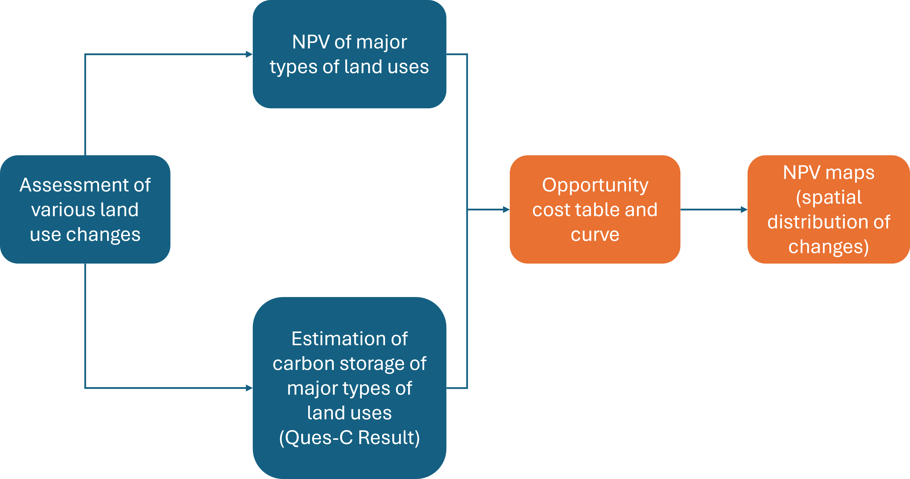
7.2.2 2.2 Step-by-step Instructions
Step 1: Uploading Land Cover, NPV and Carbon Data
In this step, you’ll upload four data sets required for analysis.
[Upload Land Cover Map at T1]
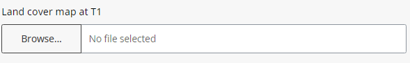
- Click the “Browse” Button in the “Land Cover Map at T1” section.
- Select your Land Cover Map (GeoTIFF format) for Time Period 1 (T1), representing land cover at the beginning of your analysis period.
- Ensure Proper Projection and Resolution: Use UTM projection and ensure a resolution of at least 100m x 100m.
- When the data is successfully uploaded, it will appear as follows.
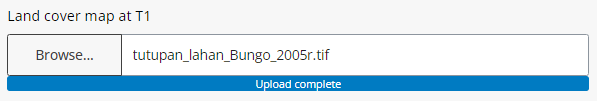
[Upload Land Cover Map at T2]
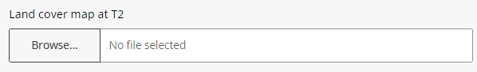
- Click the “Browse” Button in the “Land Cover Map at T2” section.
- Select your Land Cover Map (GeoTIFF format) for Time Period 2 (T2), representing land cover at the end of your analysis period.
- Ensure Correct Projection and Resolution as with T1.
- When the data is successfully uploaded, it will appear as follows.
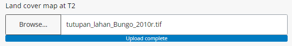
[Upload NPV Look-up Table]
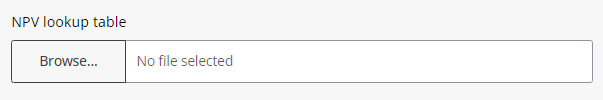
- Click the “Browse” Button in the “NPV Lookup Table” section.
- Select the NPV Lookup Table (CSV format), containing economic values per land use type.
- When the data is successfully uploaded, it will appear as follows.
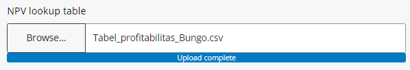
[Upload QUES-C Table]
- Click the “Browse” Button in the “QUES-C Table” section.
- Select the QUES-C Table (CSV format), which includes carbon values for each land use type.
- When the data is successfully uploaded, it will appear as follows.
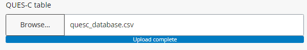
Step 2: Setting Analysis Parameters
- Set the years for each land-use map to mark the start (T1) and end (T2) of your analysis.
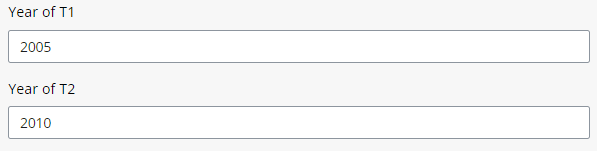
- Enter ‘No Data’ Information (use ‘0’).
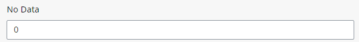
- Select Output Directory where results will be saved, Click ‘+’ to save and Select.

Step 3: Running the Analysis
Once all data is uploaded and parameters are set, run the analysis. Results will appear in the “Results” tab.
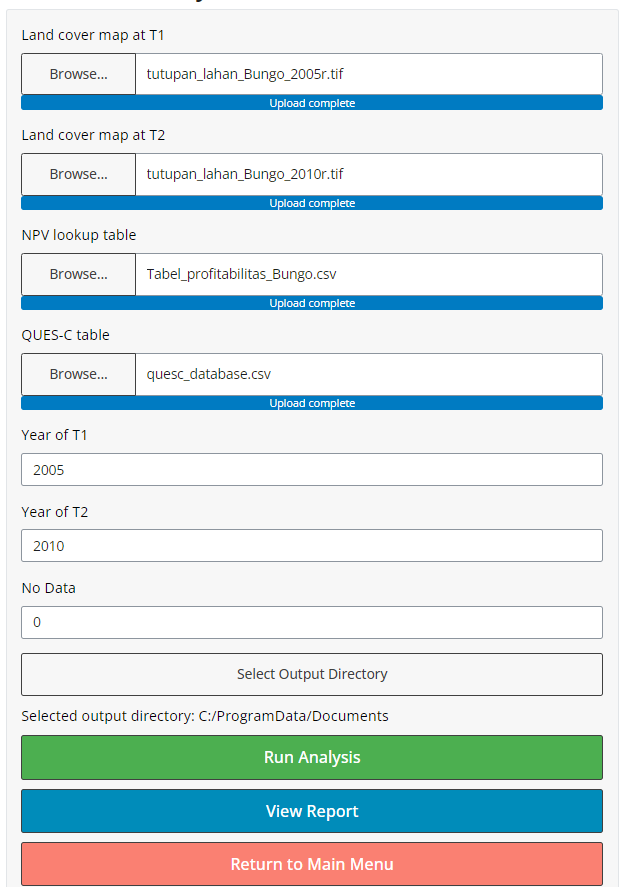
7.2.3 2.3 Tips
- Ensure that all input maps have consistent projection and resolution for accurate analysis.
- Larger data sets may take longer to process, so plan accordingly.
7.3 3. Data Requirements
7.3.1 3.1 Input Data & Parameters
| No | Data Name | Type | Format | Projection Requirements | Description |
|---|---|---|---|---|---|
| 1 | Land Cover Map (Time 1) | Categorical raster | GeoTIFF | UTM | Map of land use types for the start year. |
| 2 | Land Cover Map (Time 2) | Categorical raster | GeoTIFF | UTM | Map of land use types for the end year. |
| 3 | NPV Lookup Table | Numerical | CSV | Revenue stream and cost structure per land use type | NPV of different land uses. |
| 4 | QUES-C Database | Numerical | CSV | Carbon stocks, sequestration rates | Carbon values (CO2eq) per land use type. |
7.3.2 3.2 Example Datasets
[Example data sets can be accessed in link.]
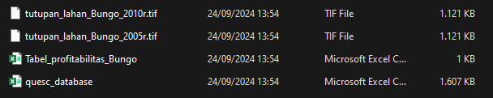
7.3.3 3.3 Data Acquisition
[Guidance on finding suitable data and common sources.]
7.4 4. Outputs
7.4.1 4.1 Output Files
| File Name | Type | Description |
|---|---|---|
| land_use_change_map_[SUFFIX].tif | Raster | Map showing land use changes between specified time periods. |
| transition_matrix_[SUFFIX].csv | CSV | Table of land use transitions between categories. |
| report_[SUFFIX].html | HTML | Report summarizing analysis results, including visualizations and tables. |
7.4.2 4.2 Report Interpretation
This section presents the results of the profitability analysis, focusing on key insights derived from the opportunity cost table, opportunity cost curve, Net Present Value (NPV) map per land use type, and their implications for decision-making. The results highlight land-use efficiency, economic returns, and trade-offs, providing a foundation for policy formulation and land management strategies.
- Opportunity Cost Table
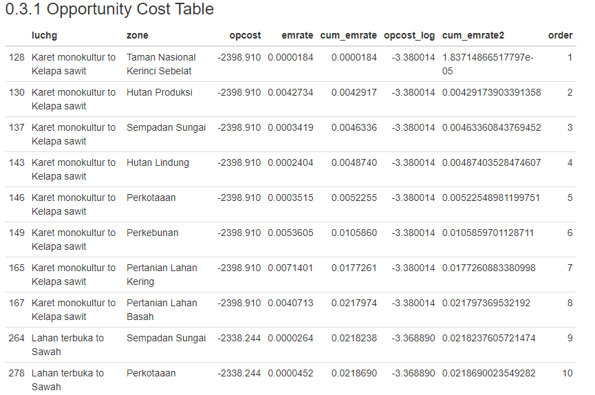
The opportunity cost table illustrates the economic trade-offs associated with different land-use decisions by comparing the potential income from alternative uses of land. The table shows that:
Forestry and agroforestry systems have relatively lower opportunity costs due to their carbon sequestration potential, making them attractive under carbon payment schemes.
Monoculture expansion incurs higher opportunity costs, particularly in high-biodiversity or high-carbon storage areas. This suggests that converting these areas into monoculture agricultural land might lead to significant losses in ecosystem services, such as carbon storage, which could otherwise be monetized through carbon credits.
From the table, it’s evident that policymakers should prioritize land uses that balance economic returns with environmental sustainability. For example, lands with high opportunity costs should be earmarked for conservation or low-impact uses, rather than agriculture or urban expansion.
- Opportunity Cost Curve
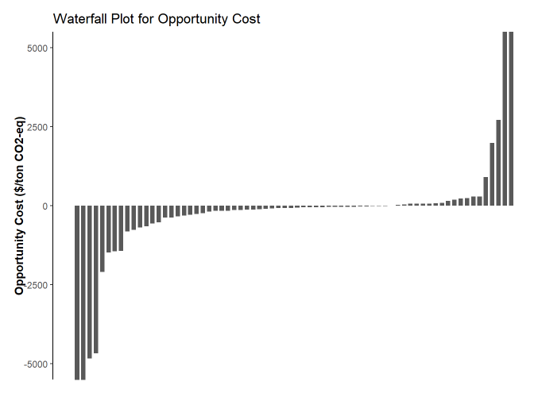
The opportunity cost curve can provide insights into the financial performance of a land-use type over a set time horizon.
Understanding axis
X-Axis (Horizontal Axis):
Typically represents time (years) or a varying parameter, such as the discount rate, cost factors, or revenues. If the X-axis shows time, the curve will reflect how the opportunity cost evolves throughout the time period.Y-Axis (Vertical Axis):
Represents the opportunity cost value, in this case is monetary per carbon (i.e., USD/ton CO2-eq). It indicates the cumulative value discounted to present terms at each point on the curve.
Key points of the curve
Initial Opportunity Cost (Year 0):
The curve typically starts at an initial at Year 0, which is often negative if the project requires an upfront investment (e.g., land acquisition, infrastructure setup). A negative result at this point indicates the project hasn’t generated enough returns yet to cover the initial costs.Break even Point (OpCost = 0):
The point where the NPV curve crosses the horizontal axis (OpCost = 0) is the break even point. This is the year when the project begins to generate enough returns to cover all costs, including the discount factor.Positive Zone:
The area where the curve rises above the horizontal axis indicates periods where the project is generating a positive return. The height of the curve in this zone indicates the magnitude of the profitability—higher OpCost values mean greater financial returns relative to the initial investment.Slope of the Curve:
The slope of the OpCost curve indicates how fast it is accumulating value. A steep positive slope suggests high returns over time, whereas a flat or gently sloping curve indicates slow growth. A negative slope could indicate declining revenues or increased costs in later years.Long-Term Value:
At the end of the time horizon, the value shows the total profitability of the project. If the Opportunity Cost remains positive, the project is expected to be profitable by the end of the time period. If the curve dips back into negative territory, it could signal declining profitability or unsustainable project dynamics over the long term.
7.5 5. Theoretical Background
7.5.1 5.1 Model Description
The model used in this module focuses on land-use change and its impact on profitability and environmental sustainability. Conceptually, the model analyzes temporal changes in land cover to evaluate how different land-use types transition over time, with particular emphasis on economic performance and ecosystem services such as carbon sequestration.
7.5.2 5.2 Key Assumptions
Key assumptions used in this module are as follows:
- It is assumed that the data used for calculating costs (inputs, operations, etc.) and revenues (output prices, market demand) is accurate and represents current market conditions.
- The module assumes that there are no unexpected external shocks, such as economic crises, extreme weather events or policy changes.
- The module typically assumes full utilization of production capacity, which may not reflect real-world inefficiencies or downtime in operations.
7.5.3 5.3 Limitations
The module limitations and potential sources of error/uncertainty are as follows:
- Does not account for changes in production costs and price volatility.
- Analysis accuracy is limited by the quality and resolution of the input data.
7.6 References
[ @article{sofiyuddin2012assessment, title={Assessment of profitability of land Use systems in Tanjung Jabung barat district, Jambi province, Indonesia}, author={Sofiyuddin, Muhammad and Rahmanulloh, Arief and Suyanto, S}, journal={Open Journal of Forestry}, volume={2}, number={4}, pages={252}, year={2012}, publisher={Scientific Research Publishing} }]